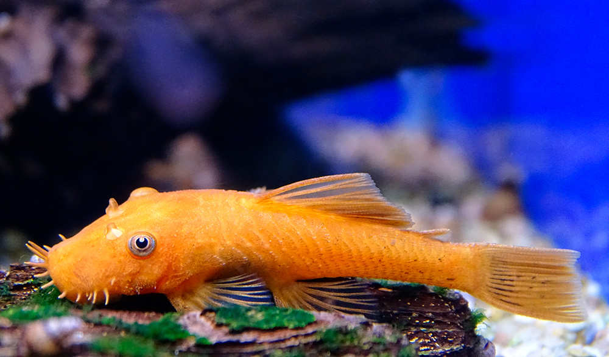

Разновидности сомов и Сомиков
Таракатум
Торакатум – один из самых популярных декоративных сомиков.Среди основных привлекательных качеств можно выделить: красивый внешний вид, неприхотливость в содержании и спокойный характер.
Сом торакатум широко распространен на территории Центральной и Южной Америки. Его можно встретить в бассейнах Амазонки, Ориноко, Рио-Негро и др.
Анциструс

Эти неутомимые труженики отлично справляются с ролью чистильщиков.
Среди морфологических особенностей можно выделить уплощенное тело, покрытое костными пластинами, и развитую ротовую присоску с бугорками, предназначенными для соскабливания водорослей.
Главным украшением половозрелых самцов анциструса являются многочисленные выросты на голове – тентакулы.
Стеклянный сомик
Сткеклянные сомики миролюбивы и хорошо сочетаются с любыми неагрессивными видами рыб. Они прекрасно поедаеют качественные сухие корма в хлопьях или чипсах, поэтому проблем с их кормлением у вас также не возникнет.
Их отличительная черта – отсутствие пигментации в чешуе, поэтому можно с легкостью разглядеть все внутренности этой необычной рыбки. За то, что рыбки порой «сливаются» с окружающей средой, их нередко называют сомы-призраки.
Сомик Даниил
Ничем непремечательная ссылка
Этот молодой, незамужний и красивый мужчина учится в "Седовке", он хочет слать капитаном, как и его кумир Кунка.Он большой фанат музыки, Данил уважает рок.Любимая песня и группа Данила: Infornal FuckЪ (слабоумье и отвага) .
Он творческий человек, два года назад Данил заинтересовался акустическим инструментом известным как "гитара", с тех пор, вечерами за игрой в доту, мы слушали его неустанные старания и прекрастные песни в его исполнении, ныне он еще и пишет свои песни, его брат их называет рофлорыбой.Что бы обуздать своего внутреннего зверя, Данил записался на тренировки в гребной канал, где до сих пор проводит занятия. Даниил мой давний знакомый, спортсмен, творческая личность, ценитель исскуства и обладатель хороших друзей, в общем хороший человек,
я желаю ему всегда помнить о опоре, как своя семья и друзья
Сомик Иван
Молодой но не менее талантливый брат Даниила, Иван тоже мечтает бороздить море и стать коком на коробле, вы могли подумать, что здесь опечатка, но это не наркотик, а повар на корабле
Ничем непремечательная ссылка , еще в давние времена, когда летали динозавры, Иван пошел на греблю, как и свой брат, где нашел свою любовь к воде. Иван любит рок, его любимая группа:Ляпис Трубецкой, а композиция:Чиж и Ко (о любви).
Вывод: сомики бывают не только рыбы, но и мои други